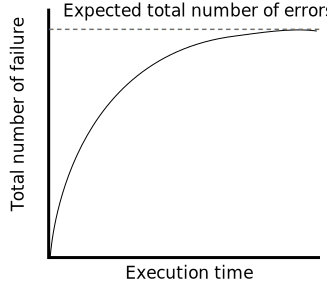

Software Reliability & Quality Assurance
- In the unit of Software Reliability & Quality Assurance, we will delve into crucial aspects of software
engineering aimed at ensuring the dependability and quality of software systems.
- The curriculum encompasses an exploration of reliability issues, including the identification and
mitigation of potential challenges.
- We will become familiar with reliability metrics, understanding how to quantify and measure the
reliability of software through matrices and other measurement tools.
- The unit also addresses reliability growth modeling, providing insights into how software reliability
evolves over time.
- An integral part of the syllabus focuses on software quality, with an examination of ISO 9000
certification specific to the software industry.
- Additionally, we will gain an understanding of the SEI Capability Maturity Model (CMM) and its role in
enhancing software development processes.
- The unit culminates in a comparison between ISO and SEI CMM, offering us a comprehensive view of the
standards and models that underpin software reliability and quality assurance in the professional
landscape.
Software Reliability
- Definition: Software reliability refers to the trustworthiness or dependability of
a software product.
- Probability: It is quantified as the probability of the software product
functioning correctly over a specific period of time.
Reliability Issues
Reliability issues in software engineering encompass challenges related to the
trustworthiness and dependability of a software product. One significant challenge is the difficulty in
mathematically characterizing the relationship between software reliability and the number of bugs. The
impact of bug location adds complexity, as fixing errors in less utilized parts of the software often
yields minimal improvement. Moreover, software reliability is not solely contingent on bug quantity but
is also influenced by the specific location of these errors in the code. User-dependent factors, such as
how the product is used, further contribute to the intricacies of measuring reliability. In summary,
reliability issues involve navigating the nuances of bug location, observer-dependent perceptions, and
the continuous evolution of a product's reliability as errors are detected and addressed.
- Mathematical Characterization: It is challenging to express software reliability in
terms of bugs through a mathematical expression. Understanding the relationship between reliability
and the number of bugs is complex.
- Impact of Bug Location: Removing errors from less usable parts of software has
minimal impact on perceived reliability. Approximately 90% of a program's execution time is spent on
executing only 10% of its instructions, known as the core. Removing defects from the least used
parts results in a limited improvement.
- Location Dependency: Reliability depends not only on the number of bugs but also on
the precise location of errors in the code. Fixing a bug in frequently used parts significantly
improves reliability compared to fixing bugs in less used sections.
- User-Dependent Reliability: Software reliability is influenced by how the product
is used. If users interact with correctly implemented features, the perceived reliability is high.
Conversely, invoking functions with errors leads to numerous failures, lowering the perceived
reliability.
- Challenges in Measurement: Software reliability measurement is complicated due to
factors such as the location-dependent impact of fixing a bug, observer-dependent perceived
reliability, and continuous changes in reliability as errors are detected and fixed.
Reliability Metrics
Reliability metrics play a crucial role in software engineering, addressing the diverse
reliability requirements across different categories of software products. The Software Requirements
Specification (SRS) document becomes essential for specifying the reliability of software. Despite the
inherent difficulty in formulating reliability, practicality demands quantitative expressions. Here, six
metrics are discussed to measure software reliability.
- Rate of Occurrence of Failure (ROCOF): ROCOF quantifies the frequency of failures
by dividing the total number of observed failures by the duration of observation.
- Mean Time to Failure (MTTF): MTTF represents the average time between two
successive failures over a large number of occurrences. Only run time is considered in the time
measurements, excluding error fixing and boot time.
- Mean Time to Repair (MTTR): MTTR measures the average time spent on error tracking
and fixing once a failure occurs.
- Mean Time Between Failure (MTBF): MTBF is derived by combining MTTF and MTTR,
indicating the expected time until the next failure after a failure occurrence.
- Probability of Failure on Demand (POFOD): POFOD assesses the likelihood of system
failure when a service request is made, expressed as a probability (e.g., a POFOD of 0.001 means 1
out of 1000 service requests results in failure).
- Availability: Availability measures the likelihood of a system being available for
use over a specific period, accounting for the number of failures and repair time (down time) when a
failure occurs.
Reliability Growth Modeling
Reliability growth modeling involves using mathematical models to illustrate how the
reliability of a software product improves as errors are identified and corrected. We discuss three key
models, each providing insights into the dynamic nature of reliability improvement.
Jelinski and Moranda Model (1972):
- Basic Assumptions: The Jelinski and Moranda model, proposed in 1972, relies on
two key assumptions:
- The reliability increases by a constant increment with each error detection and repair,
implicitly assuming perfect error fixing in every instance.
- All errors contribute equally to reliability growth, assuming a uniform impact across
different types of errors.
- Realism Considerations: Acknowledging the limitations of the model, it's
important to note that these assumptions are unrealistic. In reality, different errors
contribute differently to reliability growth, and error fixes may not always be perfect,
potentially introducing new types of errors.
- Reliability Growth Prediction: Despite its limitations, the Jelinski and
Moranda model predicts reliability growth, as illustrated in the accompanying Figure. The graph
represents a step function model of reliability growth over time.
- Instantaneous Failure Rate: The model defines the instantaneous failure rate
(also called the hazard rate) as Z(t) = ∆ × (N – i), where ∆ is a constant, N is the total
number of errors in the program, and t is any time between the ith and (i + 1)th failure. This
means the failure rate remains constant between two failures and improves by ∆ after every
failure.
- Graphical Representation: Refer to the accompanying Figure for a visual
representation of the step function model of reliability growth, providing insights into how the
reliability of a software product evolves over time according to the Jelinski and Moranda model.
- On the graph diagram, with time (on the
x-axis) and ROCOF (on the y-axis), the plot visualizes how the rate of failure occurrence
changes
over time as errors are detected and repaired. The ROCOF curve reflects the model's assumption
that
reliability increases by a constant increment each time an error is identified and fixed. This
visualization helps in understanding the dynamic nature of reliability improvement predicted by
the
Jelinski and Moranda model.
Littlewood and Verall’s Model:
- Negative Reliability Growth: Littlewood and Verall’s model allows for negative
reliability growth, acknowledging that fixing a bug may introduce additional errors, potentially
decreasing the overall reliability of the software.
- Imperfect Bug Fixes: In contrast to the Jelinski and Moranda model, it
recognizes the imperfections in bug fixes, understanding that they may introduce new errors,
affecting the software's reliability.
- Diminishing Returns: The model accounts for diminishing returns as errors are
repaired over time. Initially, the average improvement to product reliability per repair may be
substantial, but as testing and fixing progress, this improvement decreases.
- Independent Error Contribution: An error's contribution to reliability
improvement is treated as an independent random variable following a Gamma distribution. This
captures the idea that error corrections with larger impacts on reliability are addressed first.
Goel-Okutomo Model:
- Exponential Distribution of Execution Times: The Goel-Okutomo model assumes
that execution times between failures follow an exponentially distributed pattern.
- Expected Number of Failures: The expected number of failures at any time is
represented as µ(t) and is calculated as the expected value of failures between time t and time
t + ∆t.
- Non-Homogeneous Poisson Process (NHPP): The reliability growth in this model is
assumed to follow a Non-Homogeneous Poisson Process. This means that the expected number of
error occurrences is proportional to the expected number of undetected errors existing at time
t.
- Immediate and Perfect Error Correction: Once a failure is detected, the model
assumes immediate and perfect error correction, enhancing the reliability of the software.
- Formula for Number of Failures: The number of failures at time t is given by
the formula µ(t) = N(1 – e–bt), where N is the expected number of defects, and b is the rate at
which the failure rate decreases.
- Graphical Representation: The change in the number of failures over time has
been graphically plotted, providing a visual representation of how failures evolve as the
software undergoes testing and error correction.

Software Quality
- Traditional Definition: Traditionally, product quality is defined in terms of
fitness for purpose, meaning a quality product fulfills user expectations. This concept is
interpreted in the Software Requirements Specification (SRS) document.
- Limitations in Software Quality Definition: However, for software products, the
"fitness for purpose" definition has limitations. For example, a functionally correct software
product may not be considered of high quality if it has an almost unusable user interface.
- Modern View of Quality: In the modern perspective, several quality factors or
attributes are associated with software products, including:
- Portability: A software product is considered portable if it can easily run
on different hardware and operating system environments and interface with external hardware
devices and software products.
- Usability: Usability refers to a software product being user-friendly,
catering to both expert and novice users.
- Reusability: Reusability is observed when different modules of the software
can easily be reused to develop new products.
- Correctness: A software product is correct if it correctly implements the
specified requirements in the SRS document.
- Maintainability: Maintainability indicates that errors can be easily
corrected, new functions can be added, and existing functionalities can be modified without
significant challenges.
ISO 9000 Certification for Software Industry
What is ISO 9000 Certification?
- Reference for Contract: ISO 9000 certification acts as a reference for
contracts
between independent parties. The standard provides guidelines for maintaining a quality system,
addressing both operational and organizational aspects.
- Operational and Organisational Aspects: ISO 9000 addresses operational aspects,
including processes, and organizational aspects such as responsibilities and reporting. It
offers
recommendations for high-quality product development without being directly concerned about the
product itself.
- Types of ISO 9000 Standards: ISO 9000 consists of three standards—ISO 9001, ISO
9002, and ISO 9003. Each applies to specific types of organizations in different industries.
- ISO 9001: Applicable to organizations engaged in design, development,
production, and servicing of goods, including most software development organizations.
- ISO 9002: Applies to organizations not involved in product design but
focused on production, excluding software development organizations.
- ISO 9003: Applies to organizations exclusively involved in the
installation
and testing of products.
ISO 9000 for Software Industry
- Challenges in Interpretation: Many clauses of ISO 9000 use generic
terminologies,
posing challenges for interpretation in the context of software development. Software's
intangibility and reliance on data as the only raw material contribute to these challenges.
- Software Development Differences: Software's intangibility makes it challenging
to
control and manage until development is complete. Unlike traditional manufacturing, software
development doesn't involve physical raw materials like iron-ore or coal, rendering certain ISO
9000
clauses irrelevant.
- ISO 9000 Part-3: Due to these differences, ISO released ISO 9000 Part-3 in
1991,
offering guidance specifically tailored for the software industry. However, official guidance
remains limited, requiring continuous cross-referencing with ISO 9000-3.
SEI Capability Maturity Model (SEI CMM)
Overview
The Software Engineering Institute (SEI) Capability Maturity Model (SEI CMM) was introduced by the
Software Engineering Institute of Carnegie Mellon University, USA. Originally developed to aid the US
Department of Defense (DoD) in software acquisition, SEI CMM proved instrumental in enhancing software
quality for organizations. In simple terms, CMM serves as a reference model for categorizing software
process maturity into different levels.
Usage of SEI CMM
SEI CMM can be utilized in two ways: Capability Evaluation and Software Process Assessment.
Capability
Evaluation assesses an organization's software process capability and is conducted by the contract
awarding authority. Software Process Assessment is for internal use, enabling organizations to
enhance
their own process capability.
Maturity Levels
- Level 1: Initial
The initial level has no specific requirements. Few or no defined processes lead to chaotic
development efforts, with engineers following individual processes.
- Level 2: Repeatable
Basic project management activities are prepared, including cost and schedule tracking.
Configuration management tools are used, but processes are not documented. Repeatability is
achieved when producing similar products.
- Level 3: Defined
Processes for management and development activities are defined and documented. There is a
common
organization-wide understanding of activities, roles, and responsibilities. Process and
product
qualities are not yet measured.
- Level 4: Managed
Focus shifts to software metrics, collecting both process and product metrics. Quantitative
quality goals are set, and tools like Pareto charts and fishbone diagrams are used for
measurement.
- Level 5: Optimizing
Process and product metrics are collected and analyzed for continuous improvement. The
organization adapts to innovative ideas and technologies based on quantitative feedback from
process measurements.
CMM Shortcomings
- Lack of Guidance: Organizations often express a need for more guidance on how
to
improve, despite understanding the areas requiring improvement.
- Documentation Overload: CMM's emphasis on thicker documents and detailed
information contrasts with agile practices, which prioritize reducing complexity and minimizing
documentation without sacrificing relevant details.
- Maturity Level Measurement: Getting an accurate measure of an organization's
current maturity level is challenging, as CMM takes an activity-based approach without assessing
the
effectiveness of these activities in delivering intended results.
Comparison between ISO & SEI CMM
Overview
The comparison between ISO (International Organization for Standardization) and SEI CMM (Software
Engineering Institute Capability Maturity Model) sheds light on the distinctive features of two
prominent frameworks for ensuring quality and maturity in software development processes.
Comparison
While both ISO and SEI CMM aim to improve processes and ensure quality, they differ in scope and
application. ISO offers broad applicability across industries, emphasizing adherence to international
quality standards. In contrast, SEI CMM is specifically designed for the software industry, focusing on
the gradual maturity of software development processes. The choice between ISO and SEI CMM depends on
the organization's industry and its primary objectives in quality management and process improvement.